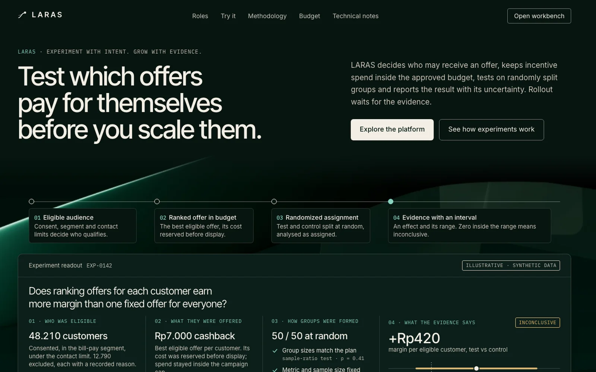
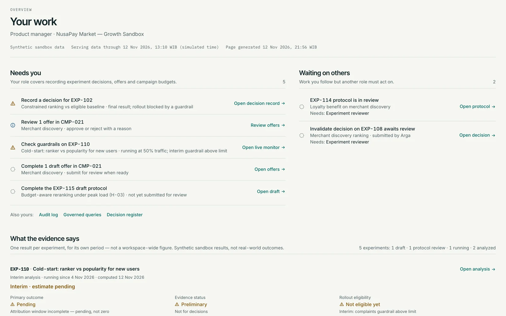
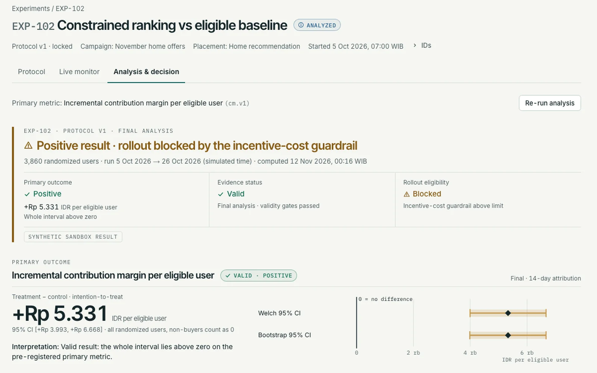
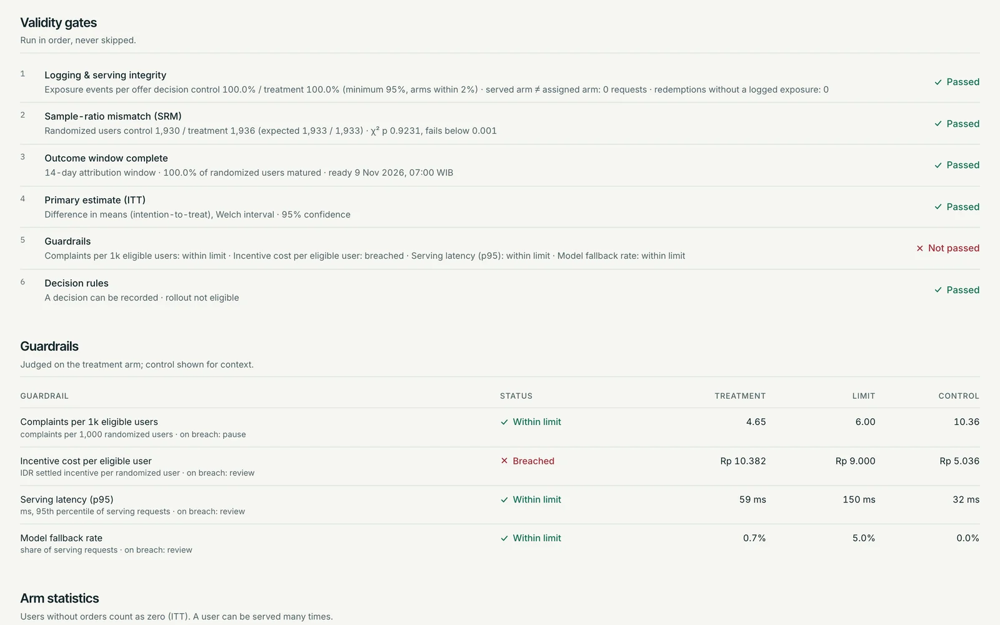
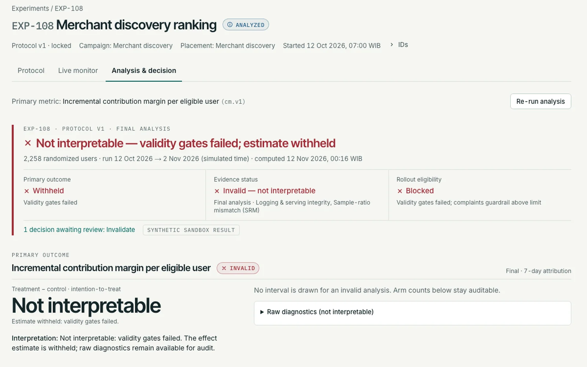
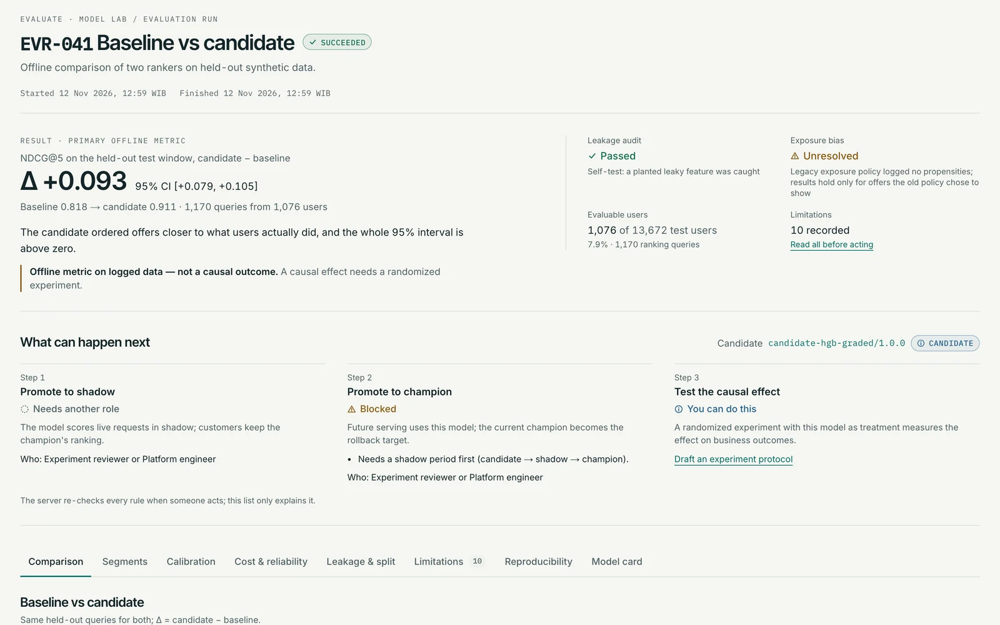
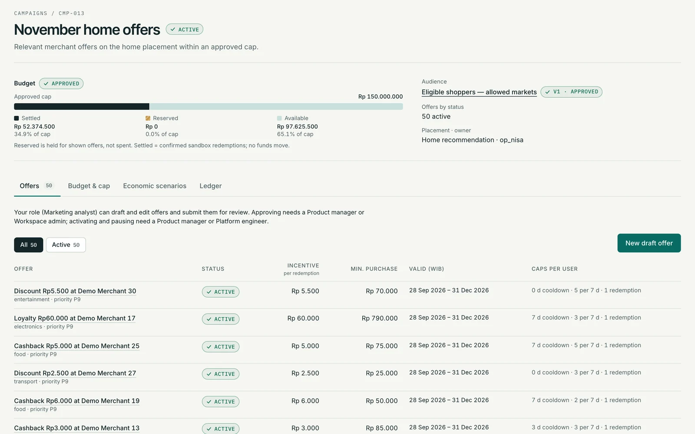

LARAS
Which customer gets which offer, at what cost — and whether a randomized test really showed that it pays.
- Role
- Solo — requirements, data model, statistics, ML evaluation, UX; implemented with AI coding agents under my direction
- Stack
- FastAPI, PostgreSQL, Redis + Celery, scikit-learn, Next.js, Blender
- Timeline
- November 2026
- Status
- Built · tested locally · not deployed, no public repo

A generous offer is not a reason to break the rules.
Growth teams decide which customer sees which voucher or cashback. Three things fail quietly: an offer reaches someone who opted out or falls outside its terms; two requests spend the same budget at the same moment and the campaign overspends; and a test is read as a win even though its groups were not split as planned.
LARAS ranks offers only after those rules pass, and treats a rollout as something a randomized experiment has to earn. Everything runs on one fictional sandbox business, NusaPay Market, generated by a seeded simulator — no real customers, merchants or money.
From the product specEligibility is a hard gate before learned ranking, and an auditable evidence bundle comes before any rollout decision.
Each step can refuse.
The model orders offers; rules, the database and the experiment gates decide what may happen.
- 01
Eligibility before ranking
Consent, opt-out, market, cooldown and frequency caps are a hard gate; the ranker only orders offers that passed. The chosen offer is revalidated and reserved before display. If the model misses its deadline or serving is down, the answer is an eligible baseline or no offer, with a reason code.
- 02
A budget that cannot go negative
Available budget is a database constraint, and a reservation is a conditional update. With Rp10.000 left, two concurrent Rp7.000 requests: exactly one succeeds. Eleven ledger tests cover this, a 24-thread stress run and an expiry-versus-redemption race, which exposed a real deadlock that was then fixed.
- 03
Offline evaluation, labelled offline
Temporal split with a 7-day embargo, a leakage audit and a planted leaky feature that must block training. A gradient-boosted ranker beats popularity on held-out synthetic data, but the gain comes from matching categories, exposure bias is unresolved, and the screen says it is not a causal result.
- 04
Experiments that can say “invalid”
Protocols are pre-registered and frozen in the database once submitted, then reviewed by a second role. Assignment is hashed and stable. Gates run in order — logging, sample-ratio mismatch (SRM), outcome window, intention-to-treat (ITT) estimate, guardrails — and the server rejects a rollout that fails any of them.
A positive experiment that still may not roll out.
| Check | Result |
|---|---|
| Offline ranking (EVR-041), NDCG@5, popularity → candidate | 0.818 → 0.911 |
| Difference in NDCG@5 [95% CI, user bootstrap; 1,170 queries, 1,076 users] | +0.093 [+0.079, +0.105] |
| EXP-102 ranker vs eligible baseline — contribution margin per eligible user (ITT) | Valid · +Rp4.906 [+3.510, +6.302] |
| EXP-102 incentive-cost guardrail | Breached → rollout blocked |
| EXP-108 with an injected client bug that loses treatment requests | Invalid · SRM p < 1e-4 · no estimate |
| A/A replay (identical policy in both arms, 2,000 users) | Inconclusive · CI covers 0 |
| Welch CI coverage over 600 simulated experiments | Within 92.5–97.5% |
All figures come from a seeded simulator of a fictional business. Offline ranking metrics measure agreement with biased logged exposure, not causal impact; experiment results describe the simulator, not a market. EXP-108 is invalid by design — it exists to prove the gates catch a broken test. The screenshots below come from an earlier seed (EXP-102 +Rp5.331 [+3.993, +6.668]); after a data fix the reseeded estimate is the one in the table, with the same conclusion and the same guardrail breach.
A workbench that knows who is asking.
Overview, audiences, campaigns and offers, the ranking lab, experiments (protocol, live monitor, analysis), decisions, monitoring and settings, plus a mobile brief. Six fictional personas — product manager, marketing analyst, data scientist, experiment reviewer, platform engineer, admin — see only what their role may do; a second tenant checks isolation.






Tested on one laptop. Not deployed.
Latest recorded runs: 107 Python tests (unit, statistical, ML, and integration against a real PostgreSQL), 125 web unit tests, and 88 browser tests against the real API in Chromium, 1 opt-in test skipped. The slower end-to-end A/A replay passed in an earlier session. Decisions and deviations from the spec are written down as 16 architecture decision records, the candidate ranker has a model card, and a traceability table maps each requirement to its test.
- Not yet: a deployment or public repository, single sign-on (a development identity provider stands in), drift detection, an external security or accessibility audit, a manual screen-reader and 200% zoom pass, Safari and Firefox.
- Load figures (p95 84 ms at a 150 requests-per-second burst with four serving workers) are lab numbers from the same laptop, not a service-level objective.
- The code was written with AI coding agents under my direction; the results above come from the runs recorded in the repository’s execution log.